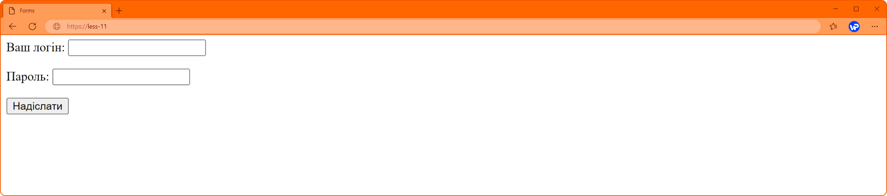
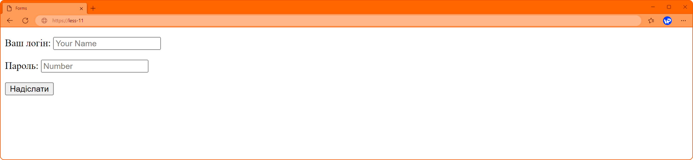
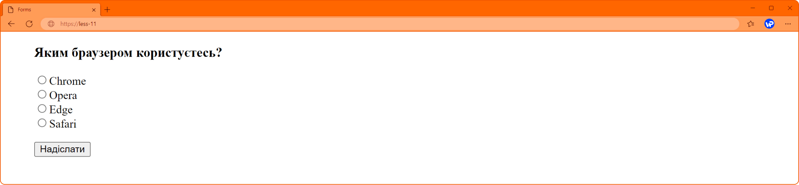
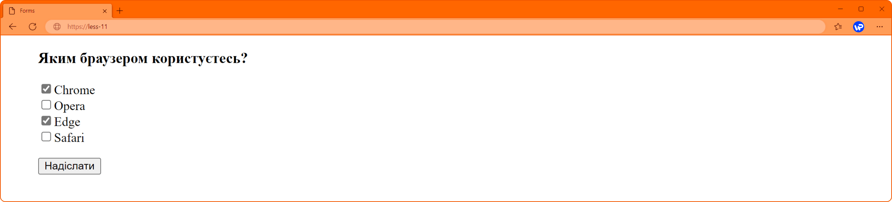
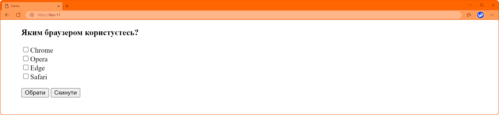
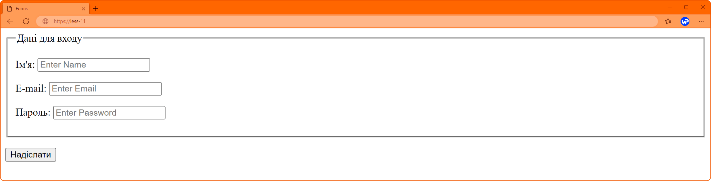

Форми
Форма – це компонент веб-сторінки з інтерактивними елементами керування, такими як текстові поля, кнопки, прапорці, перемикачі, списки, що призначений для отримання даних від користувача.
Форми додають на веб-сторінку за допомогою елемента <form>. Він є контейнером для всього вмісту форми, а також для будь-яких інших тегів мови HTML. Однак він не може містити інший елемент <form>.
Майже всі поля для форми створюються за допомогою елемента <input> (введення). Зовнішній вигляд елемента <input> змінюється залежно від його атрибута type.
Основні типи відображуваного елемента керування:
- text – введення одного рядка тексту;
- password – текстове поле для введення пароля, в якому всі символи, що вводяться, замінюються зірочкою;
- radio – елемент-перемикач;
- checkbox – поле для встановлення прапорця, який можна встановити чи скинути;
- submit – кнопка, при натисканні якої відбувається надсилання даних, введених у форму;
- reset – кнопка при натисканні якої вся форма очищається.
<form>
<p>Ваш логін:<input type="text"></p>
<p>Пароль:<input type="password"></p>
<input type="submit">
</form>
Атрибут placeholder.
На практиці доволі часто трапляються ситуації, коли опис для поля є, але зовсім незрозуміло, в якому форматі потрібно заповнити дані. Щоб допомогти користувачу зорієнтуватися, у тезі <input> використовується атрибут placeholder. Значення цього атрибуту буде виведено у текстовому полі.
<form>
<p>Ваш логин:<input type="text" placeholder="Your Name"></p>
<p>Пароль:<input type="password" placeholder="Number"></p>
<input type="submit">
</form>
Eлемент-перемикач.
Атрибут типу radio для елементу input створює перемикачі, які використовують принцип логічного «АБО», тобто дозволяється обрати лише одне з декількох значень.
Треба зауважити, що при створенні перемикачів (радіокнопок), в елементі input додатково треба вказувати ще атрибут name, значенням якого є довільне ім'я. Це ім'я має бути однаковим у всій групі радіокнопок. Без цього атрибуту браузер не бачитиме зв'язку між перемикачами і буде можливість вибрати всі значення одразу.
Для того, щоб після виправлення форми на сервері можливо було визначити, який саме пункт обрали, використовується значення атрибута value, всередині якого знаходиться певне значення, воно може відрізнятися від тексту підказки.
<form>
<p>Яким браузером користуєтесь?</p>
<ul type="none" >
<li><input type="radio" name="browser" value="Chrome">Chrome</li>
<li><input type="radio" name="browser" value="Opera">Opera</li>
<li><input type="radio" name="browser" value="Edge">Edge</li>
<li><input type="radio" name="browser" value="Safari">Safari</li>
</ul>
<input type="submit">
</form>
Eлемент-прапорець.
Атрибут типу checkbox для елементу input створює елемент-прапорець (чекбокс). На відміну від перемикачів, чексбокс дозволяє обирати із наявних декілька елементів.
Для об’єднання чекбоксів в єдину групу, як і для радіокнопок, додатково в елементі input треба вказати атрибут name, значенням якого є довільне ім'я. Також, для подальшого визначення значень обраних пунктів застосовується атрибут value.
<form>
<p>Яким браузером користуєтесь?</p>
<ul type="none" >
<li><input type="checkbox" name="browser" value="Chrome" checked>Chrome</li>
<li><input type="checkbox" name="browser" value="Opera">Opera</li>
<li><input type="checkbox" name="browser" value="Edge">Edge</li>
<li><input type="checkbox" name="browser" value="Safari">Safari</li>
</ul>
<input type="submit">
</form>
Наявність атрибута checked (встановлений) у елемента-перемикача та прапорця вказує на те, який з запропонованих варіантів повинен бути обраний за замовчуванням при завантаженні сторінки, якщо це необхідно.
Кнопки підтвердження та скидання.
Атрибут типу submit (надіслати) для елементу input створює кнопку, при натисканні якої відбувається відправлення браузером даних, що були введені користувачем у форму.
За замовчуванням у браузерах на кнопці пишеться «Надіслати», для заміни напису на кнопці використовується атрибут valuе з новим значенням напису.
Атрибут типу reset (скинути) для елементу input створює кнопку, при натисканні якої відбувається скидання усіх налаштувань у формі, що зробив користувач.
<form>
<p>Яким браузером користуєтесь?</p>
<ul type="none" >
<li><input type="checkbox" name="browser" value="Chrome"#62;Chrome</li>
<li><input type="checkbox" name="browser" value="Opera">Opera</li>
<li><input type="checkbox" name="browser" value="Edge">Edge</li>
<li><input type="checkbox" name="browser" value="Safari">Safari</li>
</ul>
<input type="submit" value="Обрати">
<input type="reset">
</form>
Групування елементів форми.
Елементи форми, що пов'язані за змістом, можна згрупувати за допомоги елементу fieldset. Браузер відображає його, як рамку навколо групи елементів форми.
Для зручності, кожна така група може містити свій заголовок, встановлюється він за допомоги елементу legend, який вбудовує текст заголовка в рамку групи.
<form>
<fieldset>
<legend>Дані для входу</legend>
<p>Ім’я:<input type="text" placeholder="Your Name"></p>
<p>E-mail:<input type="text" placeholder="Your Email "></p>
<p>Пароль:s<input type="password" placeholder="Your Password "></p>
</fieldset>
<input type="submit">
</form>